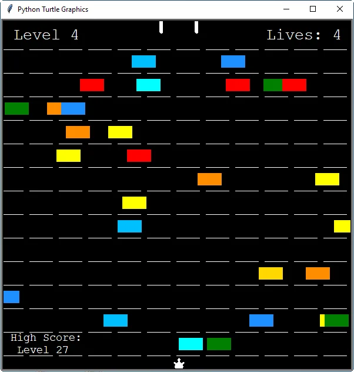

Το χελωνάκι που περνά τον αυτοκινητόδρομο, τα παιχνίδια mame στα καλύτερα τους.

Σε αυτή τη σελίδα θα βρείς το turtle crossing, ένα παιχνίδι mame απο τα παλιά φτιαγμένο στην Python.
Το Turtle Crossing ήταν ακόμα μια άσκηση μέτριας δυσκολίας στην Python. Είναι απο αυτές τις ασκήσεις που αν καταφέρεις να λύσεις το βασικό πρόβλημα, τα υπόλοιπα έρχονται εύκολα. Πρόκειται για το κλασικό mame παιχνίδι που παίζαμε μικροί στα μαγαζιά ηλεκτρονικών με το εικοσάρικο. Όχι το εικοσάευρω, μιλάω για το παλιό ασημένιο νόμισμα των 20 δραχμών, το εισιτήριο του παραδείσου για την πιτσιρικαρία της εποχής.
Το παιχνίδι φτιάχτηκε με την βιβλιοθήκη Turtle (!) και το βασικότερο πρόβλημα αφορά στον αριθμό των αυτοκινήτων που θα παράγονται. Αν δημιουργείται ένα αυτοκίνητο με κάθε ανανέωση της οθόνης (0,1 δευτερόλεπτα), έχεις 600 αυτοκίνητα κάθε λεπτό στην οθόνη σου, ο συνωστισμός είναι απίστευτος και το παιχνίδι δεν μπορεί να προχωρήσει. Απο την άλλη αν μεγαλώσεις την ανανέωση της οθόνης το παιχνίδι δεν τρέχει ομαλά και φαίνεται να "κολλάει".
Κλασικό πρόβλημα προγραμματισμού που πρέπει να σκεφτείς "out of the box" για να λυθεί. Και η λύση είναι οι κληρώσεις. Δηλαδή κάθε φορά που τρέχει η λειτουργία παραγωγής αυτοκινήτου, δεν θα δημιουργείται ένα νέο αυτοκίνητο αλλά θα γίνεται μια κλήρωση με αριθμούς απο το 1 ως το 5 π.χ, και αυτοκίνητο θα παράγεται μόνο όταν κληρωθεί το νούμερο 3. Έτσι περιορίζεις τα νέα αυτοκίνητα κατα 80% και η ανανέωση της οθόνης σου διατηρείται κανονικά.
Το παιχνίδι είναι διαθέσιμο για εγκατάσταση σε Windows εδώ και ολόκληρος ο κώδικας του προγράμματος βρίσκεται εδώ. Όπως και σε κάθε άλλο πρόγραμμα που διατίθεται στο blog, το αρχείο exe έχει σκαναριστεί στο virus total για ιούς.